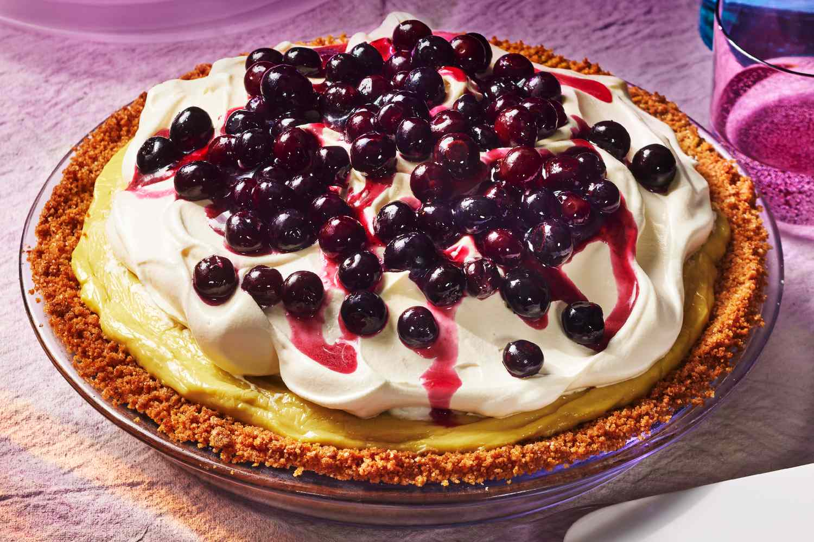

Blueberry-Banana Cream Pie

Description
How to make a blueberry-banana cream pie with homemade pudding! One of the easiest and most satisfying desserts on Earth, this recipe is truly a treat for the Sam's to
enjoy for awhile.
Mouthwatering blueberries add jammy flavor to this summer-ready twist on banana cream pie.
Ingredients
- 2 1/2 cups whole milk
- 1/2 cup mashed banana
- 1 tablespoon vanilla extract
- 4 large egg yolks
- 1/2 cup granulated sugar
Steps
- Preheat oven to 375°F. Stir together graham cracker crumbs, granulated sugar, and salt in a medium bowl until combined. Add melted butter, and stir until mixture resembles damp sand.
- Stir together milk, mashed banana, and vanilla in a medium saucepan. Cook over medium, stirring occasionally, until mixture is steaming, about 5 minutes.
- Arrange sliced bananas in a single layer in bottom of cooled crust. Spread strained banana custard evenly over sliced bananas.